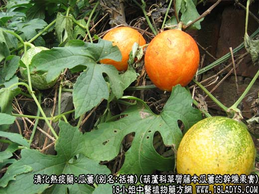
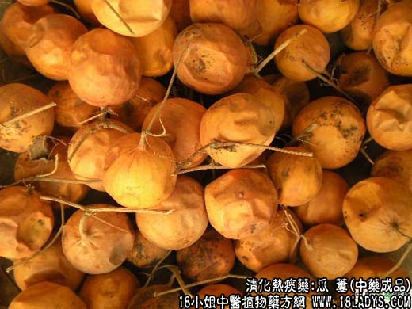
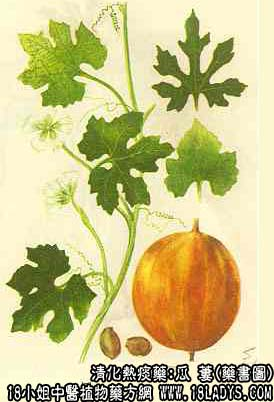

瓜蒌为常用中药，《神农本草经》列为上品，商品中有皱皮瓜蒌（仁瓜蒌）光皮瓜蒌（糖瓜蒌）两种。
别名：栝楼、糖瓜蒌、瓜蒌。
来源：为葫芦科草质藤木植物瓜蒌和双边瓜蒌干燥果实，多为栽培也有野生。
植物形态：多年生宿根草质藤本。块根肥厚，表面灰黄色。茎攀援，长达10米，多分枝。叶互生，有长柄，叶片近圆形或心脏形，常为5～7掌状裂，裂片矩圆形，先端尖，边缘有疏锯齿或缺刻，幼嫩时两面疏生柔毛，叶腋具细长卷须，前端有分歧作螺旋状。花单性，雌雄异株，花萼筒状，先端五裂，花冠白色，5深裂，裂片三角楔形。先端深裂呈丝状。瓠果圆形或长圆形，成熟后桔黄色或桔红色，有光泽，内有果瓤丝络状及多数种子。种子扁平卵圆形，灰棕色，边缘多有环形边。花期6～8月，果期9～10月。
产地：皱皮瓜蒌主产于山东肥城、长清等。光皮瓜蒌主产于河南、山东、河北、安徽、江苏、浙江、广西等地。
性状鉴别：1、皱皮栝蒌：类球形，两端稍尖，直径约7～9厘米，外果皮桔红色或棕果色，微有光泽。干燥后果皮皱缩，顶端有圆形花柱残存，柄端略尖，具青绿色短柄，短柄周围的果皮上有放射状纵棱沟。果皮质略厚，内含种子多数，与果瓤粘结成团状，多与果皮分离，摇之发响。破开后果皮内壁黄白色或淡黄棕色。果瓤丝络状或胶质状，棕黄色或棕红色。粘结于种子之上。气如焦糖味甜。
2、光皮瓜蒌：类圆球形，直径7～10厘米，外果皮黄色或棕黄色，有光泽，不皱缩或少皱缩。果皮略薄，内含种子多数，被果瓤粘结，但多不成团状，常粘附于果皮之上，摇之不动不响。果瓤黄棕色，含糖分较多，不易干燥，余与皱皮瓜蒌相同。
以上两种瓜蒌习惯认为皱皮者较好。均以个大不破裂，桔红色或黄棕色，糖分多者为佳。
主要成分：含脂肪油、瓜蒌酸等。
功效与作用：清热化痰、利气通便，其作用似为消炎、祛痰、通便。又药理实验证实：
1、抗菌。体外试验对大肠杆菌、伤寒杆菌、宋内氏痢疾杆菌等肠内致病菌有抑制作用。
2、抗癌。动物实验对肉瘤和腹水癌细胞有一定抑制作用，但抑制率不高。
炮制：压扁切块，生用。
性味：甘、寒。
归经：入肺、胃、小肠经。
功能：通胸痹，消痈肿，润肺化痰。
主治：痰热咳嗽，胸痹堵闷，消渴，大便燥结，痈肿疮毒。
临床应用：1、用于清胸内热痰，尤其适用于伴有胸痛之咳嗽痰多、咳痰不爽之证，如急性支气管炎、胸膜炎、肺炎等，常配黄连、半夏，加强清热去痰作用，方如小陷胸汤；热甚者再加配柴胡、黄芩等，方如柴陷汤。
2、用于治疗胸痹而属气滞血瘀引起者（如冠心病心绞痛），取其有利气宽中作用，常配薤白、半夏等，方如栝蒌薤白半夏汤。
3、用于治疗便秘，尤其适于热痰内阻、口干烦渴的便秘，取其有滑肠而兼清热的作用。常配火麻仁、桃仁、柏子仁等。栝蒌仁、火麻仁、桃仁都有滑肠通便的作用，其区别是：火麻仁治肠燥气弱之便秘；桃仁治血瘀郁热之便秘，适于热象较甚者。一般燥热便秘不必用栝蒌仁。
4、治热证痈疡。肺痈、乳痈、肠痈属热火者，均可用蒌仁清火，作为辅助药用。肺痈配鱼腥草、桔梗等；乳痈配山甲、银花等；肠痈配蒲公英、丹皮等。
用量：6～18g。
处方举例：1、小陷胸汤（《伤寒论》）：川连3g，半夏4.5g，栝蒌仁18g，水煎服。
2、柴陷汤（《通俗伤寒论》）：柴胡9g，黄芩6g，川连3g，法半夏4.5g，栝蒌仁15g，枳实4.5g，桔梗6g，生姜4.5g，水煎服。